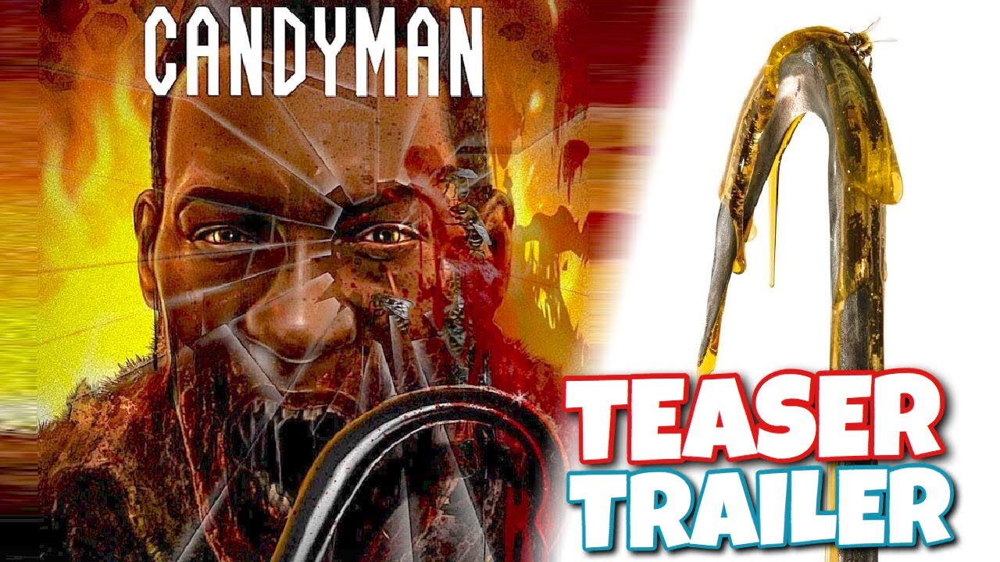

Candyman
Actors
- Yahya Abdul-Mateen II
- Tony Todd
- Teyonah Parris
- Colman Domingo
- Nathan Stewart-Jarrett
- Rebecca Spence
- Cassie Kramer
- Brian King
Age restriction:PG16
Showing times:11:20 12:45 1:15 2:00
Movie synopsis
Dare to say his name.For as long as residents can remember, the housing projects of Chicago’s Cabrini Green neighbourhood were terrorised by a word-of-mouth ghost story about a supernatural killer with a hook for a hand, easily summoned by those daring to say his name five times into a mirror. Now, a decade after the last of the Cabrini towers were torn down, visual artist Anthony McCoy and his girlfriend, gallery director Brianna Cartwright, move into a luxury loft condo in Cabrini, gentrified beyond recognition and inhabited by upwardly-mobile millennials. With Anthony’s painting career on the brink of stalling, a chance encounter with a Cabrini Green old-timer exposes Anthony to the tragically horrific nature of the true story behind Candyman. Anxious to maintain his status in the Chicago art world, Anthony begins to explore these macabre details in his studio as fresh grist for paintings, unknowingly opening a door to a complex past that unravels his own sanity and unleashes a terrifyingly viral wave of violence that puts him on a collision course with destiny.